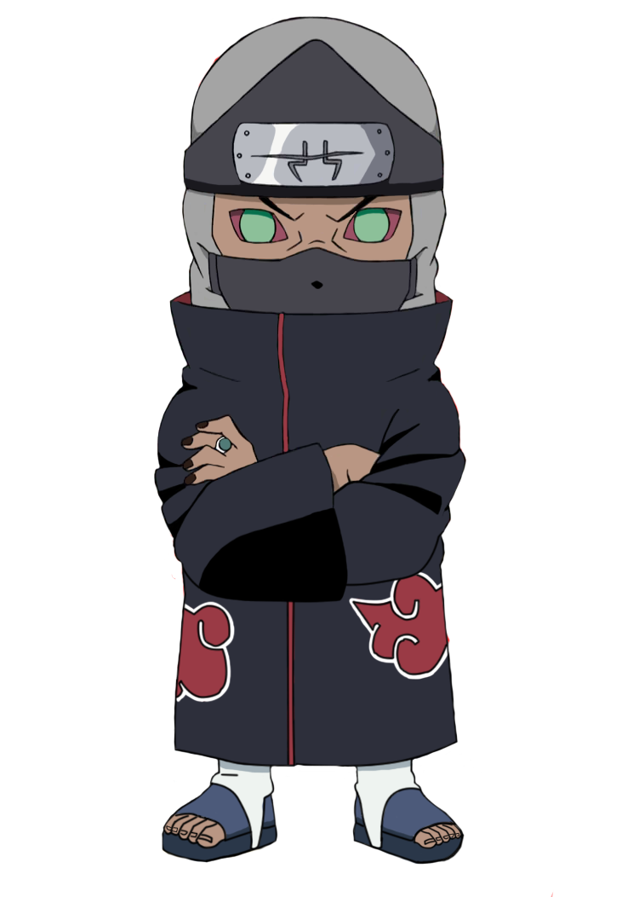

KAKUZU
Kakuzu(角都?) adalah mahluk kaga jelas anak hasil hubungan gelap seekor gurita tukang jahit dan mr.Krab (karena mata duitan), dia selalu memakai masker di wajahnya karena dia menderita penyakit sinusitis. Sebelum menjadi anggota Akatsuki dia pernah melamar kerja pada Mr. Krab, namun ditolak karena pernah rebutan duit. Lalu dia menjadi tukang jahit gak laku di daerah Pondok Gede. Pada suatu hari, Pain meminta Kakuzu untuk menjahit mayat bekas dipakai mahasiswa kedokteran UGM, karena Kakuzu sangat terampil, maka Pain mengajaknya bergabung ke Akatsuki. Dia bertarung dengan cara menggunakan tentakel warisan dari ibunya yang gurita tukang jahit. Ia juga membuka usaha restoran Seafood yang sempat terancam karena isu bumbu cumi goreng benang yang terkenal itu diduga memakai formalin.